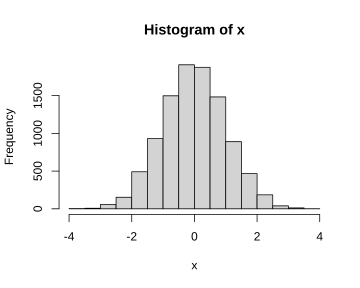
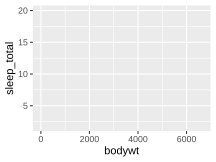
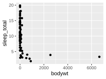
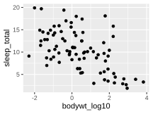
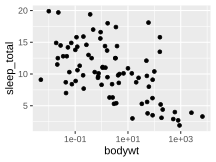

The history of R can be split into two epochs. First, there was the age before the tidyverse. This was a time of considerable friction, where data analysts wrestled with inconsistent syntax and workflows that seemed to resist them at every turn. It was a formative era, and the frustrations it produced planted the seeds for everything that would follow.
Figure 4.1: An engraving depicting acolytes of the tidyverse burning live sacrifices, captive within a large wicker effigy, to appease their deities (Pennant 1784).
Then came the tidyverse. A genuine turning point in the R world. As described by its website (https://www.tidyverse.org/), the tidyverse is an opinionated collection of R packages (see Section 3.19), brought to life by Hadley Wickham and a dedicated community of contributors (Wickham et al. 2019). Where once working with data in R demanded patience and hard-won expertise, the tidyverse made everything much more accessible and efficient. This meant that anyone willing to learn, could develop the skills to wrangle, transform, and visualise data with clarity and confidence. However, not everyone welcomed it with open arms, and some in the R community viewed the new approach with scepticism (Muenchen 2017), but the tidyverse has since become a cornerstone of modern R practice and transformed an already elegant language into something genuinely magical.
Each package within the tidyverse can be installed individually, though most people find it simplest to install them all at once with a single command, which is exactly where we will begin. From there, this chapter will introduce you to ggplot2, the tidyverse’s powerful and elegant system for visualizing data. By the end, you will be producing real plots from real data, and you will have a framework for how ggplot2 functions that will serve you well throughout the rest of this book.
4.1 Installing the tidyverse
Each package within the tidyverse can be installed individually, though most find it easiest to install every package within the scope of the tidyverse all at once.
install.packages("tidyverse")
# Load the packageslibrary(tidyverse)
── Attaching core tidyverse packages ──────────────────────── tidyverse 2.0.0 ──
✔ dplyr 1.2.1 ✔ readr 2.2.0
✔ forcats 1.0.1 ✔ stringr 1.6.0
✔ ggplot2 4.0.3 ✔ tibble 3.3.1
✔ lubridate 1.9.5 ✔ tidyr 1.3.2
✔ purrr 1.2.2
── Conflicts ────────────────────────────────────────── tidyverse_conflicts() ──
✖ dplyr::filter() masks stats::filter()
✖ dplyr::lag() masks stats::lag()
ℹ Use the conflicted package (<http://conflicted.r-lib.org/>) to force all conflicts to become errors
While the above code installs all the packages, running library(tidyverse) only loads the the nine “core” packages: dplyr, readr, forcats, stringr, ggplot2, tibble, lubridate, tidyr, and purr. Other tidyverse packages, such as readxl, will need to be loaded separately using the library() function.
Note A Note for Linux Users
As mentioned in Section 3.19.2, Linux tends to follow a philosophy of minimal, modular installations. That means system libraries are not bundled with the base OS, and installing the tidyverse will likely fail unless the libraries it depends on are already present on your system.
Before running install.packages("tidyverse"), open a terminal and run the appropriate commands for your distribution to install the required system packages.
Debian, Ubuntu, and Ubuntu-based distributions (Kubuntu, Mint, etc.):
At the time of writing, this list should be sufficient for a successful tidyverse installation on Debian/Ubuntu-based systems. However, dependencies can change over time, so do not panic if something is missing. R’s console output is usually quite informative about what is needed if the tidyverse install fails. In most cases it is as simple as running sudo apt install <package-name> (or the equivalent for your distribution).
Users on other distributions (Fedora, Arch, openSUSE, etc.) will need the equivalent packages for their package manager. If the installation fails, R’s console output will usually identify exactly what’s missing.
Speaking for the beginner, it will be noticed that when the tidyverse is loaded, not only is there a confirmation of what packages (and their versions) have been loaded, but there is also a list of “conflicts” displayed in the output.1
For instance, two functions from the dplyr package, filter() and lag(), have the same name as pre-existing functions within R and, when you load a package with a conflict like this, precedence is always given to the most recently loaded package. This means, when you use the filter() function for example, R is going to use the version belonging to dplyr, not the original version that was a part of base R’s stats package (which is pre-loaded each time you use R). Though you can still use that original version in the following manner: package_name::function_name(). For example, stats::filter().
As a whole, the tidyverse will not solve all your problems, but it will come damn close. Admittedly, and this is particularly true for beginners, much of what the tidyverse offers will not be needed in your daily programming rituals, but will come in handy when least expected.
4.2 Plotting with R
A core component of any GOOD DATA ANALYSIS obviously involves visualizing your data. As you progress through the various topics in this book, specific types of plots and their uses will be discussed in detail; however, for the time being, it will be helpful to get an intuitive sense of how plotting works with R generally. Thus, what follows in this section is intended to help you understand the logic of plotting with R. The goal at this point is not to make you an expert; rather, it is to provide beginners with a base level of knowledge and experience.
By itself, base R comes with a stock set of functions for plotting data. To illustrate we can run the following code to produce a nice looking histogram …
x <-rnorm(10000)hist(x)

In the case of the above code, the function rnorm() is just generating \(10,000\) random values.2
R’s base plotting functions provide a convenient way to produce simple, high-quality plots, and they can be quite efficient when working with basic univariate data involving only one or two variables. However, modern research often demands the handling of far more complex datasets — ones that may include multiple response variables alongside numerous explanatory variables. Each additional variable adds layers of complexity and nuance to your data and, by extension, to the plots used to visualize them. While R’s built-in plotting tools can accommodate these more elaborate scenarios, doing so often requires a high level of fluency with R’s syntax and customization options. For this reason, this book will forgo R’s base plotting system in favour of the widely respected ggplot2 package, a core component of the tidyverse. ggplot2 provides a more consistent and powerful framework for building complex plots, making it the preferred tool for data visualization throughout this text.
The “gg” in ggplot2 stands for “grammar of graphics,” a term borrowed from Leland Wilkinson’s influential book of the same name (Wilkinson 2005). Now, the word “grammar” might dredge up long-buried memories of dull English classes, but fear not. In this context, the term simply emphasizes that ggplot2 is built on a coherent set of rules for assembling visualizations. This structure allows users to build a wide variety of plots in a consistent, modular way that can be easily tailored to their data and needs. This is a major improvement over many traditional plotting systems, which often require you to awkwardly cram your data into rigid, predefined formats—like trying to fit a square peg (your beautifully weird data) into a round hole (the software’s narrow expectations).
The easiest way to understand how ggplot2 works is to simply dive in and use it. Along the way, we will also learn a little bit more about R and data manipulation. However, a disclaimer is perhaps useful here:
Warning
This chapter contains a large variety of functions and strategies for plotting data with ggplot2. The reader would do well to head the advice provided at the start of Chapter 3.
The first thing to do will be to ensure that ggplot2 has been installed into our computer’s library of packages and loaded so we can access its functions. As mentioned in Section 4.1, if you have installed and loaded the tidyverse, this is already done, but if you chose not to do that,3ggplot2 can be installed and loaded as a standalone package as well.
4.3 An example data set: msleep
Before we can plot anything, we need something to plot. In addition to its large set of plotting functions, the ggplot2 package also provides a few illustrative data sets.4 We will work with the msleep data set, which provides a variety of measurements relevant to the sleep behaviour of a wide range of mammals. To access the data you need only run the code msleep after the tidyverse has been loaded, which will output a \(83 \times 11\) data frame.5 Given the limited space available in the console window, the data frame is going to be truncated substantially. Thus, if you would like to view the entire data set, you can utilize R’s View() function, which will display the data in a separate spreadsheet style window.
msleep # print data to consoleView(msleep) # view the data in a spreadsheet-style window
Looking closely at the data, we can see a variety of variables (the column names) that are, for the most part, self explanatory. In this case, the column names represent distinct variables that have been measured and, particularly with larger data frames that cannot be adequately printed to the console, it is often useful to have R list out the name of each column. We can do this quite easily using the names() function.
Now, while the names of each column are self-explanatory, the elements of each column are perhaps less so. For instance, in the $sleep_total column, are we looking at values in minutes, hours, or days? In the $conservation column we can see a number of abbreviations such as lc, nt, vu, and so on. What do we make of those? A good starting point for answering these questions is to check the documentation associated with the data set, which all CRAN packages are required to include. This can be accessed in the usual way with a ?
?msleep
Inspecting the documentation, we can see that $sleep_total is given in hours and that the column $conservation indicates “the conservation status of the animal”. Admittedly, concerning this latter column, that does not tell us too much, but it does at least give us a starting point for understanding what those values might represent. In all likelihood, we are seeing abbreviations for the IUCN’s (International Union for Conservation of Nature) species ranking.
lc = Least Concern
nt = Near Threatened
vu = Vulnerable
en = Endangered
cd = Conservation Dependent
Using a scatter plot as a basic starting point, we will graph the relationship between the variables body weight (kg) and sleep total (hours). These are represented by the columns $bodywt and $sleep_total respectively.
4.4 Adding layers
ggplot2 constructs plots by adding visual layers on top of one another. The first layer is the grid upon which our scatter plot’s points will appear. To generate this first layer we can simply type:
ggplot(data = msleep, aes(x = bodywt, y = sleep_total))

Looking at the ggplot() function we typed, we can see that the argument data tells ggplot2 where the data is coming from - in this case it is coming from the msleep data frame. The x and y arguments are telling ggplot2 what variables/columns should be mapped to the \(x\) and \(y\) axis respectively. Notice that, not only has ggplot2 labelled the axis accordingly, but it has also given them scales that correspond to size of the values found in both columns.
Next we will, quite literally, add (+) a layer of points on top of this by typing + geom_point(). The term “geom” here is just an abbreviation of “geometric object”, and points are one of many different types of geometric object ggplot2 recognizes.
ggplot(data = msleep, aes(x = bodywt, y = sleep_total)) +geom_point()

At this juncture, it is worth taking a moment to talk about how this code we have written has been organized. Here we placed geom_point() on a new line and indented it. This was not something we strictly had to do. We could have put everything on a single line like so …
ggplot(data = msleep, aes(x = bodywt, y = sleep_total)) +geom_point()
But, particularly as we add more customization to the plot, this style of writing becomes hard to read. The tidyverse’sR style guide recommends that no line of code exceed 80 characters, which is the advice most of the R community adheres to.
TipDisplaying the 80-character margin
RStudio and Positron can both be configured to display a vertical margin line at the 80-character limit.
RStudio:
Select Tools from the global menu.
Choose Global Options.
Select Code in the sidebar.
Choose Display and tick the box labelled “Show margin”.
Positron:
Select File > Preferences > Settings from the global menu.
In the settings search bar, search for ruler.
Under Editor: Rulers, click the link labelled Edit in settings.json.
In the file that opens, edit the relevant line to read:
"editor.rulers":[80]
Save the file.
To ensure that you do not exceed limit with larger blocks of code, it is worth remembering that you can always move portions of code to a new line after a comma, operator, or unclosed parentheses. The indentation we used is purely to guide the eye in recognizing that geom_point() belongs to a larger block of code.6
4.5 Inspecting potential outliers
At present, the plot does not look like much. There are numerous points scattered between 0 and 1000, and a couple of very extreme points beyond which are skewing the \(x\)-axis scale and making the majority of the data difficult to visualize. Given how rare and extreme these two values appear, we should inspect them to ensure that they are not errors within the data set (i.e., ensure that there is not a 2500 kg mouse, bird, or other such abomination in our data set). To accomplish this, most people will instinctively try to scan the data frame’s 83 rows one by one with their eyes. Obviously, that strategy will be slow, inefficient, and highly prone to error. A better strategy is to have R isolate these values using the filter() function which is part of the tidyverse’sdplyr package.7 We simply give the function our data frame, and then specify a logical rule to subset by. In this case we will tell the function to show us all the rows that have a body weight greater than 2000.
filter(msleep, bodywt >2000)
# A tibble: 2 × 11
name genus vore order conservation sleep_total sleep_rem sleep_cycle awake
<chr> <chr> <chr> <chr> <chr> <dbl> <dbl> <dbl> <dbl>
1 Asian … Elep… herbi Prob… en 3.9 NA NA 20.1
2 Africa… Loxo… herbi Prob… vu 3.3 NA NA 20.7
# ℹ 2 more variables: brainwt <dbl>, bodywt <dbl>
A quick glance at the output reveals that these two points represent the Asian and African elephant respectively. Thus, while these values are quite extreme and do not seem to be terribly representative of the data as a whole, they are not mistakes and therefore should remain in the data set. However, this begs the question, how do we visualize this data adequately with such odd scaling?
4.6 Logarithms
A common strategy in cases like this where larger values tend to become more and more extreme (i.e., exhibit some kind of exponential growth) is to plot the logarithm of the values, and there are different kinds of logarithms you choose from. A “base-10”, “base-2”, and “natural” logarithm, represent the most widely used types of logarithms, but you can technically use any base you desire. As a refresher of some high school mathematics, logarithms are essentially exponents in reverse. For example:
\[10^3 = 10 \times 10 \times 10 = 1000\]
A “base-10” logarithm, for instance, simply undoes this process by stating how many \(10\)s it takes to create \(1000\).
\[\log_{10}(1000) = 3\]
A “base-2” logarithm asks: how many \(2\)s are required to create \(1000\)?
\[\log_{2}(1000) \approx 9.966\]
Thus, \(2^{9.966} \approx 1000\).
A “natural” logarithm uses a base denoted as \(e\) (Euler’s Number), which is approximately \(2.71828\).8
\[\log_e(1000) \approx 6.908\]
As seen below, the use of logarithms in R is very straightforward.
log10(1000) # Base-10 functionlog2(1000) # Base-2 functionlog(1000) # Natural loglog(1000, base =666) # Pick your own base
[1] 3
[1] 9.965784
[1] 6.907755
[1] 1.062521
A base-10 logarithm is generally considered the most intuitive, so we will use that. There are various ways to incorporate a logarithmic scale on our plot’s axis, but perhaps the safest way is to simply add a new column of \(\log_{10}\) values to our dataframe and plot that instead of the standard $bodywt column (however, see the callout below for a alternative method of scaling the axis).
msleep$bodywt_log10 <-log10(msleep$bodywt)# Re-plot the dataggplot(msleep, aes(x = bodywt_log10, y = sleep_total)) +geom_point()

TipTransforming the axis, not the data
In the previous example, the logarithm was applied by creating a new column of \(x\)-axis values and plotting that. However, this means that, if you want to interpret the numbers in their original units, you need to calculate \(10^x\), which can be annoying.
An alternative strategy would be to keep the $bodywt column as is and just scale the plot’s axis itself to increment logarithmically, which ggplot2 will do straightforwardly.
ggplot(msleep, aes(x = bodywt, y = sleep_total)) +geom_point() +scale_x_continuous(transform ="log10")

The advantage of this method is you can look at a point’s value on the \(x\)-axis and know immediately that it corresponds to a weight of \(x\) kg. The drawback is you may end up with excessively small or large values on the axis, hence the scientific notation you see in the plot.
4.7 Aesthetics
Geometric objects in ggplot2, like the point geom, all have various traits, like their size, shape, and colour that can be customized. In the language of ggplot2, these are referred to as aesthetics. For example, we can customize the points in the following way …
With a bit of experimentation, it should be apparent how the arguments size and stroke work in the above example; however, the shape and colour arguments are slightly less intuitive.9 R comes with a variety of point shapes (technically called “plotting characters” or “pch” symbols for short) that are denoted by numbers. The various possibilities are depicted in Figure 4.2. In this case, number \(4\) is an \(\times\). Notably, the last five plotting characters (\(21\) through \(25\)) incorporate both a colour aesthetic for their edges and a fill aesthetic. All the other symbols only require a colour aesthetic to be specified.
The plotting characters shown in Figure 4.2 are just a few of the options available. For instance, by using values ranging between 32 and 127, you can display a variety of ASCII characters. Additionally, you can specify a particular character instead of providing a numeric value, e.g., shape = "\&".
In the above examples we specified a desired colour by typing the name of a primary colour, but we are not limited to just primary colours. R comes with a built in set of 657 differently named colours. You can obtain the full list of colour names by running colors(). R also has a built-in demo of these colours you can run to get a visual representation of each. Simply run the command demo("colors").10
Alternatively, instead of typing a colour name, you can use a hexadecimal value (also referred to as a “hex code” or “hex value”) that represents a specific colour. For example, the hex value "#FFC0CB" represents the colour pink. Hexadecimal values offer the user a lot of nuance when it comes to colour selection and, in most cases, the simplest way of finding an appropriate hex value is to consult one of the many websites devoted to colour codes and colour theory (i.e., do an internet search). However, if you would like to understand the theory behind hex codes and why they are used, see the callout below.
NoteHexadecimal Notation for Colours
Hexadecimal values are simply numbers that use a base-16 counting method. In other words, in the world of hexadecimals, there are \(16\) different numbers that are used to count with, instead of the typical \(10\) numbers \((0:9)\), you were probably raised to use. These are
Decimal
0
1
2
3
4
5
6
7
8
9
10
11
12
13
14
15
Hexadecimal
0
1
2
3
4
5
6
7
8
9
A
B
C
D
E
F
Because of their larger base, a single hexadecimal digit can store more information than a conventional base-10 digit can. For instance, if a computer stores various gradations of the colour red using just two digits, that only allows for \(100\) (\(10 \times 10\)) different reds. Using hexadecimals you can have \(256\) (\(16 \times 16\)) reds, with just two digits. Thus, if a colour is some combination of red, green, and blue, and each is stored using two hexadecimal digits that gives you \(256^3 = 16,777,216\) colours as opposed to the meagre \(100^3 = 1,000,000\) you would have using the inferior base-10 counting method.
To use hexadecimals to represent colour, two digits are assigned to red (RR), green (GG) and blue (BB), in that order like so "#RRGGBB". Smaller values are darker, and larger values are brighter. Consequently, black is represented as "#000000" and white is represented as "#FFFFFF". Thus, if you want the “purest” red, you would input "#FF0000", the purest green would be "#00FF00", and the purest blue would be "#0000FF".
4.8 Mapping Aesthetics to a Variable
In the above examples, the aesthetic changes we made to the plots affected all of the points. In the language of ggplot2, we would say that the aesthetics were “mapped” to all the points. However, it is often necessary to visually break up the points according to one of the other variables in your data. For instance, we could colour the points in our plot according to the categories in the data’s $vore column.
Notice that the plot’s legend shows an “NA” category. This is because there are NA values found within the $vore column (run msleep$vore to see them). Thus, the legend’s “NA” category represents values that we have body weight and sleep total information for, but we do not know what those animals diet consists of and therefore cannot categorize them properly.11 So instead of referring to this category as “NA”, we could refer to these as “unknown”. All we need to do is change the NA values in the data frame’s $vore column to character values that read "unknown". This can be done simply by using the ifelse() function, which tests a statement you write. If that statement is true, it produces a value you have specified, if it is false, then it produces an alternative value you have specified. In other words, it works like this:
ifelse(test, true_result, false_result)
In this case, we want to test if the value in each row is an NA value or not. Recall that the function is.na() tells us whether the value of a vector is an NA value or not.
When you run the above code, the ifelse() function scans each row of the $vore column and evaluates whether is.na(msleep$vore) is TRUE. If it is true, it replaces the existing NA value with "unknown". However, if it is FALSE, it leaves it as the original value (this is why we wrote msleep$vore after the second comma). The end result is a vector of values that we can use to replace the existing $vore column with.
When plotting, it is usually inadvisable to only adjust the colour of your points because a sizeable portion of the population has some form of colour vision deficiency (a.k.a., colour blindness). And while there are “colourblind friendly” palettes we can use, there is no universal palette that works optimally for all cases of colour deficiency. Consequently, the best practice is to have each category be represented by a distinct shape.
Wickham, Hadley, Mara Averick, Jennifer Bryan, et al. 2019. “Welcome to the tidyverse.”Journal of Open Source Software 4 (43): 1686. https://doi.org/10.21105/joss.01686.
Wilkinson, L. 2005. The Grammar of Graphics. Statistics and Computing. Springer Science.
Most packages will not display this information for you quite so nicely as the tidyverse does, so pay attention to any messages you receive using the library() function.↩︎
The random values are technically coming from a “standard normal” distribution (hence the “norm” in rnorm), but don’t worry about that for now. The function hist(x), is simply plotting those values as a histogram. Running the code should generate an output similar to what you see below.↩︎
Base R comes with a nice collection of data sets as well. To obtain a list you need only run the function data(). To obtain the list of data sets for ggplot2 you need only include the package name as an argument in this function: data(package = "ggplot2")↩︎
Technically we are looking at a tibble, which is the tidyverse’s own take on a data frame. For our present purposes though, this is a distinction without a difference.↩︎
While the R programming language allows users to indent code with reckless abandon, some programming languages, such as Python, make it part of their syntax and thus require it to be used in very specific ways.↩︎
Base R has a (more or less) equivalent function subset() that we could use as well. There are reasons for preferring filter(), but in this context there is no advantage to using either.↩︎
In R you can obtain this by running exp(1). For clarity and consistency the natural logarithm of \(1000\) has been written \(\log_e(1000)\), but it is common practice to identify natural logarithms using “\(\ln\)”. E.g., \(\ln{(1000) \approx 6.908}\).↩︎
If you accidentally omit the “u” when typing “colour”, ggplot2 will still understand what you mean, even though it isn’t correct English.↩︎
For some reason R spells “colour” incorrectly in these functions. This error has persisted for years, and the R Core Team developers show no signs of correcting it.↩︎
To see the full list of animals who have a missing $vore value, you can run filter(msleep, is.na(vore)). This will show all the rows for which is.na(vore) evaluates to TRUE.↩︎